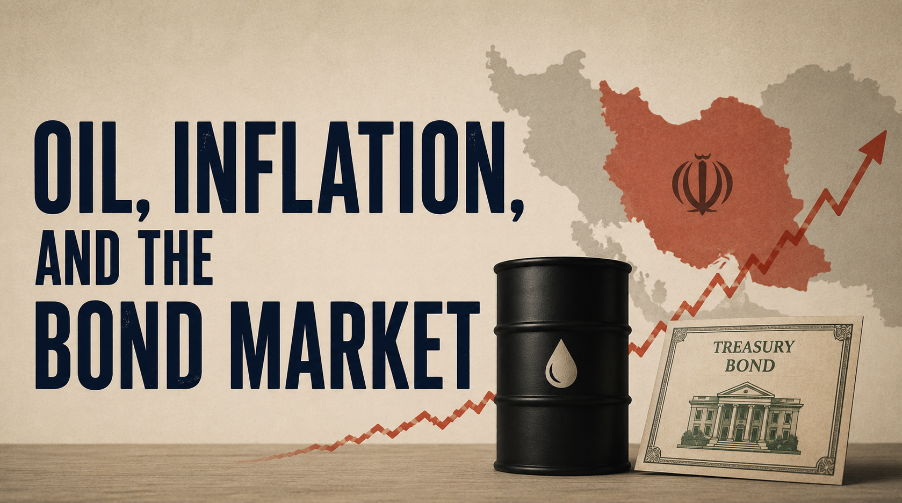

The prospect of a military conflict involving Iran has reintroduced a familiar, but largely disregarded, risk in financial markets: a sustained energy crisis with potentially catastrophic macroeconomic consequences. While news outlets are busy reporting on military escalation and crude oil prices, a more impactful story is unfolding in the US Treasury market, where asset prices continuously reprice expectations surrounding inflation, growth, and monetary policy. Because of Iran’s vicinity to the Strait of Hormuz, even the perception of instability can alter inflation expectations, yield curve dynamics, and introduce a greater uncertainty into the Federal Reserve’s policy direction. In this sense, the market response to an oil shock is not limited to higher prices at the pump, it is a broad repricing of future economic conditions.
Oil and the Global Economy
The utility of oil is uniquely pervasive within the global economy, functioning not just as a marketable commodity, but as an indispensable input into transportation, manufacturing, agriculture and industrial production. Markets are so reliant on oil, that even a small fluctuation in its price can produce a ripple effect across every sector of the economy. When crude oil prices rise, transportation and energy costs increase, supply chains become more expensive to operate, and firms often pass those costs onto customers through higher prices. This dynamic makes the price of oil one of the most influential drivers of inflation expectations, especially during periods of geopolitical instability and supply chain disruptions. Oil supply shocks have repeatedly demonstrated an ability to alter growth trajectories, weaken consumer purchasing power, and hinder the ability of central banks to balance inflation control and stable economic growth.
Bond markets care deeply about oil because Treasury yields are fundamentally tied to expectations surrounding inflation, growth, and monetary policy. Rising oil prices can induce fears of persistent inflation by increased input costs across the economy. In response, bond investors may begin pricing in tighter monetary policy causing yields to rise and bond prices to fall. At the same time, energy shocks can threaten economic growth by reducing consumer demand and causing increased financial strain on businesses, producing simultaneous upward pressure on inflation and downward pressure on growth. This dynamic is particularly consequential due to the highly sensitive nature of global markets to inflation expectations, following several years of tight monetary policy. In a market where investors are constantly reassessing the path of interest rates, and disruption in the supply of oil has the potential to reshape expectations across both commodity and fixed-income markets.
What Fiscal Conservatism Actually Means
Historically, the term "fiscal conservatism" has pertained to a preference for balanced budgets, an inherent reluctance towards the accumulation of debt, restrained expenditure growth, and a belief that government spending was limited by real fiscal constraints. Throughout his book, Free to Choose, Milton Friedman argues that the economic burden of government is determined more by how much it spends rather than by how it taxes. Friedman further asserts that resources left in private hands are more efficiently allocated than resources in the hands of the government. Under this classical understanding, fiscal conservatism is not merely an opposition to taxation, but a broader commitment to limiting the scale and fiscal reach of governments. This is an important distinction because conservative politicians within the Republican Party of the past 40-50 years seem to have been far more concerned with opposing taxes and increasingly disconnected from the stated objective of limiting budget deficits.
The Policies
The Economic Recovery Tax Act of 1981 sharply reduced marginal income tax rates, accelerated depreciation allowances, and lowered business tax burdens, all of which contributed to a widening deficit in the absence of reduced government spending. Several social programs were trimmed during the Reagan years but those spending reductions were outweighed by substantial military buildup.
During the George W. Bush administration, the Economic Growth and Tax Relief Reconciliation Act of 2001 and Jobs and Growth Tax Relief Reconciliation Act of 2003 lowered income tax rates, dividend taxes, and capital gains taxes. Yet this period also saw major government spending expansions. Total spending rose substantially due to defense, homeland security, medicare part D, and the No Child Left Behind Act.
During Donald Trump’s first administration, the Tax Cuts and Jobs Act of 2017 reduced the corporate tax rate from 35% to 21%, lowered individual tax liabilities, while budgets passed in 2018 and 2019 raised discretionary spending caps, increased defense spending, and allocated additional subsidies to agriculture workers harmed by retaliatory tariffs during the US-China trade war. More recently, Trump’s Big Beautiful Bill has continued this pattern of tax relief paired with substantial increases in defense spending and border security.
Tax reductions appear to be pursued consistently, whereas efforts toward expenditure restraint are more selective and are frequently offset by increases in defense spending. This pattern is consistent with a form of fiscal conservatism that is more accurately described as anti-tax rather than anti-deficit. While the asymmetry is evident in the figures presented, it may be somewhat overstated in the absence of controls for lagged effects, macroeconomic conditions such as recessions and GDP growth, and exogenous shocks including military conflicts.
Source Code — Federal Receipts

Source Code — Federal Debt


The trends displayed in these figures suggest that the practical meaning of fiscal conservatism is less coherent than is commonly implied. While often framed as a commitment to deficit reduction and fiscal restraint, one would expect to observe a more balanced relationship between taxation, spending, and debt over time. The data does not clearly support that expectation. At the same time, these results are meant to be purely descriptive and should be interpreted with an appropriate amount of caution, as fiscal outcomes are a reflection of not just policy choices, but also economic conditions, exogenous shocks, and lagged effects. Even so, the patterns observed here give merit to a straightforward question: to what extent does contemporary fiscal conservatism align with its stated objectives?
Where I Stand
My view of fiscal conservatism is one of measured skepticism. As a theoretical framework, it is straightforward and logically consistent: a commitment to limiting deficits implies a willingness to balance taxation and spending accordingly. In that sense, the concept itself is not inherently problematic. The challenge lies in the fact that, in practice, this balance is rarely achieved. Tax reductions are frequently emphasized, while corresponding adjustments on the spending side are more selective, resulting in outcomes that rarely conform with the stated goal of fiscal restraint.
For that reason, I find it difficult to view fiscal conservatism as a consistently applied economic framework. It functions more as a rhetorical label than as an observable policy approach.
Back to BlogViews expressed here are my own and do not represent any institution or employer.